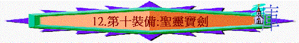

「並戴上救恩的頭盔，拿著聖靈的寶劍，就是神的道；」弗6:17
～弗6提及最後的軍裝是聖靈的寶劍，就是神的道，要拿著，不可以放低，而劍有防守及進攻的作用，我們可以靠著聖靈寶劍，抵擋仇敵，不單可以站立得住，也可以靠寶劍勝過牠！
一.聖靈與神的道關係
1.聖靈就是真理
「就是真理的聖靈，乃世人不能接受的；因為不見他，也不認識他。你們卻認識他，因他常與你們同在，也要在你們裡面。」約14:17
「並戴上救恩的頭盔，拿著聖靈的寶劍，就是神的道。」弗6:17
「並且有聖靈作見證，因為聖靈就是真理。」約壹5:7
〜耶穌說：「我是道路、真理、生命」，不單耶穌是真理，聖靈也是，聖經形容聖靈是真理的聖靈，聖靈的寶劍就是神的道，所以若有人以為內住己心的是聖靈，但由此靈所流露的言語及表現卻沒有真理，違反真理，敵擋真理的，就不是聖靈了。
2.在神的道下工作
A.想起基督的話
「但保惠師，就是父因我的名所要差來的聖靈，他要將一切的事指教你們，並且要叫你們想起我對你們所說的一切話。」約14:26
～若那人時常稱在敬拜聚會中被聖靈充滿，但很多時候不會想起主的話，似乎不太像真被聖靈充滿。
B.明白一切真理
「只等真理的聖靈來了，他要引導你們明白（原文作進入）一切的真理；因為他不是憑自己說的，乃是把他所聽見的都說出來，並要把將來的事告訴你們。」約16:13
C.引導行神的道
a.聖靈感動/引導
「不要消滅聖靈的感動。」帖前5:19
「因為情慾和聖靈相爭，聖靈和情慾相爭，這兩個是彼此相敵，使你們不能做所願意做的。但你們若被聖靈引導，就不在律法以下。」加5:17-18
b.直接說明
「聖靈對腓利說：「你去！貼近那車走。」」徒8:29
「他們事奉主、禁食的時候，聖靈說：「要為我分派巴拿巴和掃羅，去做我召他們所做的工。」」徒13:2
c.凡事教訓
「你們從主所受的恩膏常存在你們心裡，並不用人教訓你們，自有主的恩膏在凡事上教訓你們。這恩膏是真的，不是假的；你們要按這恩膏的教訓住在主裡面。」約壹2:27
D.幫助守主道
「從前所交託你的善道，你要靠著那住在我們裡面的聖靈牢牢的守著。」提後1:14
二.神的道帶來之果效
1.面對自己
A.除去污穢
「要用水藉著道把教會洗淨，成為聖潔，」弗5:26
「良心既然喪盡，就放縱私慾，貪行種種的污穢。」弗4:19
B.除去無知
「良心既然喪盡，就放縱私慾，貪行種種的污穢。」弗4:19
「神的道是活潑的，是有功效的，比一切兩刃的劍更快，甚至魂與靈，骨節與骨髓，都能刺入、剖開，連心中的思念和主意都能辨明。」來4:12
〜神的道如一個有功效，有能力如活著的守望者，人在聽道中可以會被道所感，感到扎心，道可令人看到自己本相，人因道可以受責，不會無知，而道的能力：
a.很快
〜要斷開一樣物件，有一面利刃的劍已足夠，如兩刃的劍更快斷開神的道，可以很快有功效。
b.深入
〜神的道可以進入人的內心深處，甚至至隱藏的秘密(如進入魂與靈，骨……)。
c.辨明
〜不單進入，更剖開，可以將入面的組織辨明，即可將我們心思、主意辨明，令我們醒覺自己是否有硬心、不信、有罪，有偽善！
C.除去舊我
「你們學了基督，卻不是這樣。如果你們聽過他的道，領了他的教，學了他的真理，就要脫去你們從前行為上的舊人，這舊人是因私慾的迷惑漸漸變壞的；」弗4:20-22
D.改換一新
「又要將你們的心志改換一新，並且穿上新人；這新人是照著神的形像造的，有真理的仁義和聖潔。」弗4:23-24
2.面對仇敵
A.提防引誘
「聖靈明說，在後來的時候，必有人離棄真道，聽從那引誘人的邪靈和鬼魔的道理。這是因為說謊之人的假冒；這等人的良心如同被熱鐵烙慣了一般。」提前4:1-2
「你若將這些事提醒弟兄們，便是基督耶穌的好執事，在真道的話語和你向來所服從的善道上得了教育。」提前4:6
B.分辨真假
「親愛的弟兄啊，一切的靈，你們不可都信，總要試驗那些靈是出於神的不是，因為世上有許多假先知已經出來了。凡靈認耶穌基督是成了肉身來的，就是出於神的；從此你們可以認出神的靈來。凡靈不認耶穌，就不是出於神；這是那敵基督者的靈。你們從前聽見他要來，現在已經在世上了。」約壹4:1-3
C.不致動搖
「直等到我們眾人在真道上同歸於一，認識神的兒子，得以長大成人，滿有基督長成的身量，使我們不再作小孩子，中了人的詭計和欺騙的法術，被一切異教之風搖動，飄來飄去，就隨從各樣的異端；」弗4:13-14
「只要你們在所信的道上恆心，根基穩固，堅定不移，不至被引動失去﹝原文作離開﹞福音的盼望。這福音就是你們所聽過的，也是傳與普天下萬人聽的（原文作凡受造的），我保羅也作了這福音的執事。」西1:23
D.勝過試探
「耶穌被聖靈充滿，從約但河回來，聖靈將他引到曠野，」路4:1
「耶穌回答說：「經上記著說：『人活著不是單靠食物，乃是靠神口裡所出的一切話。』」」路4:4
「你若在我面前下拜，這都要歸你。」」路4:7
「因為經上記著說：主要為你吩咐他的使者保護你；」路4:10
～面對肉體需要，主想起人活著乃靠神所說的話，面對是否跳下去，祂想起不可試探神，面對萬國的榮華，祂想起單要事奉神….祂不是想起自己的慾望與需要，而是想起神的道，神如何想，神的屬性，吩咐，至終令祂得勝。
～撒但也斷章取義引用聖經，但耶穌每次面對，也引用申命記的說話，若不熟練，如何與撒但應對。
E.勝過攻擊
「弟兄勝過他，是因羔羊的血和自己所見證的道。他們雖至於死，也不愛惜性命。」啟12:11
3.面對世人
A.使人歸主
「神的道興旺起來；在耶路撒冷門徒數目加增的甚多，也有許多祭司信從了這道。」徒6:7
「神的道日見興旺，越發廣傳。」徒12:24
B.使人離惡
「平素行邪術的，也有許多人把書拿來，堆積在眾人面前焚燒。他們算計書價，便知道共合五萬塊錢。主的道大大興旺，而且得勝，就是這樣。」徒19:19-20
C.使人得救
「你們既聽見真理的道，就是那叫你們得救的福音，也信了基督，既然信他，就受了所應許的聖靈為印記。」弗1:13
D.使人成長
「你們作父親的，不要惹兒女的氣，只要照著主的教訓和警戒養育他們。」弗6:4